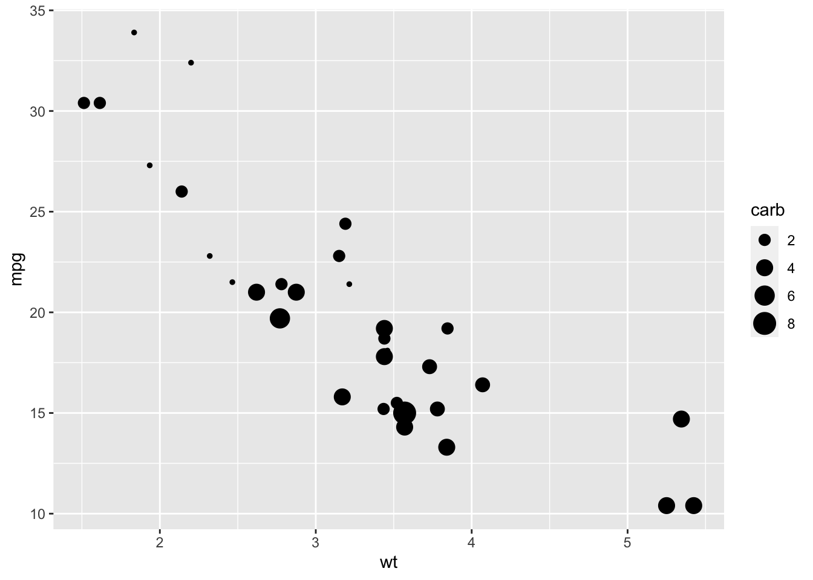
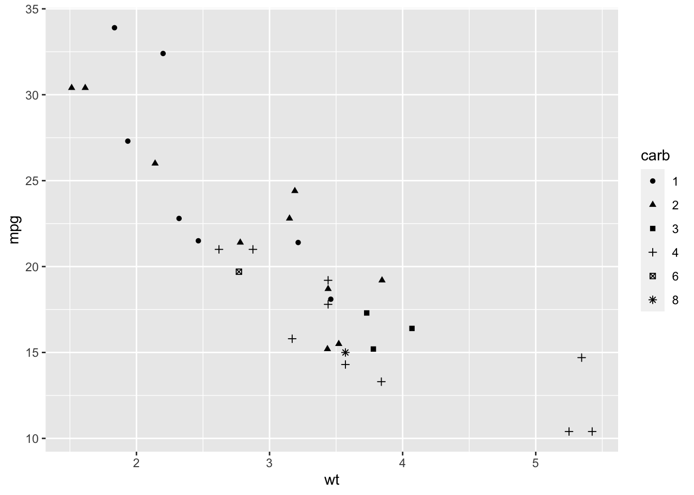
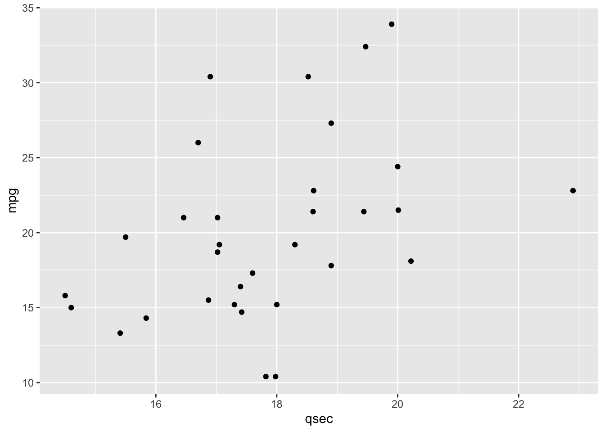
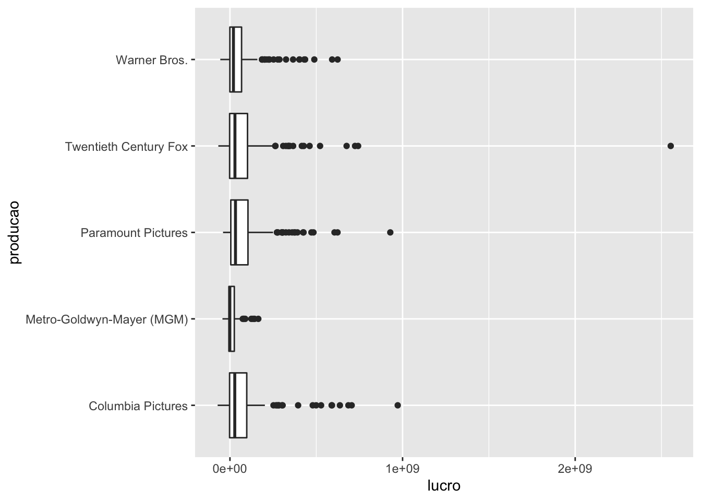
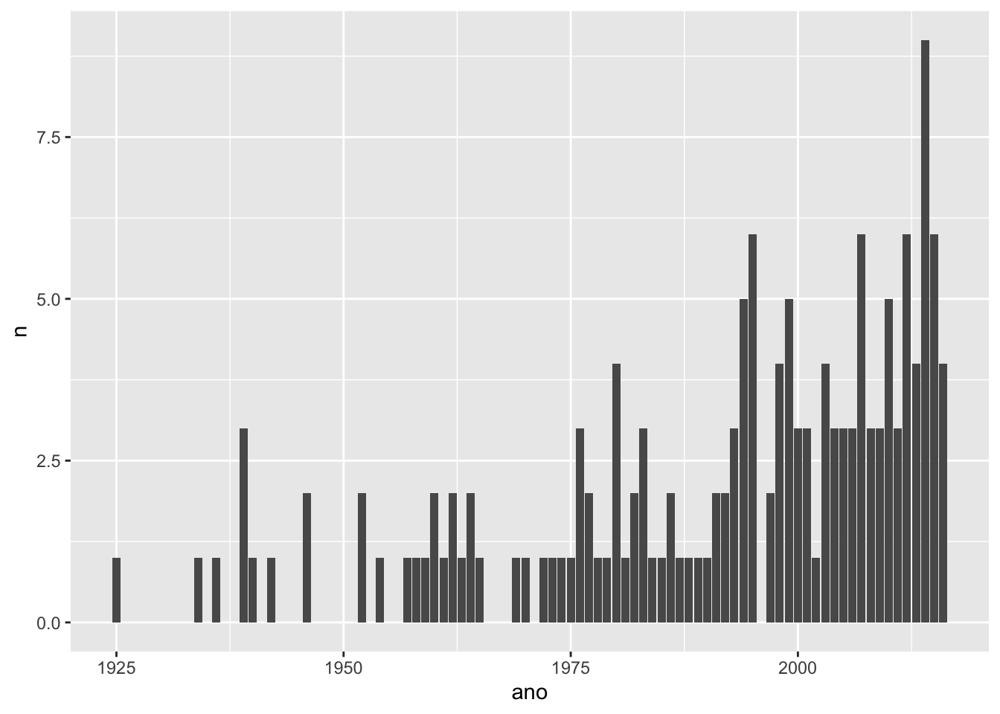

12.5 O pacote ggplot2
1. O que acontece quando rodamos o código ggplot(data = mtcars)?
A função ggplot() cria o nosso canvas, um quadro em branco onde vamos colocar todas as outras camadas do gráfico. Dentro do R, isso corresponde a uma lista com as informações necessárias para a criação do gráfico. Cada camada adicionada ao ggplot adiciona mais informações nessa lista. No exemplo acima, como passamos a base mtcars para a função ggplot(), a base mtcars é guardada dentro dessa lista, e será utilizada quando mapearmos variáveis ao gráfico.
2. O que tem de errado no código abaixo? Por que os pontos não ficaram azuis?
ggplot(data = mpg) +
geom_point(mapping = aes(x = displ, y = hwy, color = "blue"))
Quando queremos definir o valor de um atributo estético, fazemos isso fora da função aes(). Usamos a função aes() apenas para mapear variáveis aos atributos estéticos do gráfico. O correto seria:
ggplot(data = mpg) +
geom_point(mapping = aes(x = displ, y = hwy), color = "blue")
3. Mapeie uma variável contínua para a cor, o tamanho e a forma de um gráfico de pontos. Como esses atributos estéticos se comportam diferente para variáveis categóricas vs contínuas?
# Cor (var continua)
mtcars %>%
ggplot() +
geom_point(aes(y = mpg, x = wt, color = carb))
# Cor (var discreta)
mtcars %>%
mutate(carb = as.character(carb)) %>%
ggplot() +
geom_point(aes(y = mpg, x = wt, color = carb))
# Tamanho (var continua)
mtcars %>%
ggplot() +
geom_point(aes(y = mpg, x = wt, size = carb))
# Tamanho (var discreta)
mtcars %>%
mutate(carb = as.character(carb)) %>%
ggplot() +
geom_point(aes(y = mpg, x = wt, size = carb))## Warning: Using size for a discrete variable is not advised.
# Forma (var continua)
# Não pode ser utilizada com variável contínua
mtcars %>%
ggplot() +
geom_point(aes(y = mpg, x = wt, shape = carb))## Error: A continuous variable can not be mapped to shape
# Forma (var discreta)
mtcars %>%
mutate(carb = as.character(carb)) %>%
ggplot() +
geom_point(aes(y = mpg, x = wt, shape = carb))
4. Utilizando o mtcars, faça um gráfico de dispersão de mpg por qsec.
mtcars %>%
ggplot() +
geom_point(aes(y = mpg, x = qsec))
5. Utilizando o mtcars, o que acontece se você fizer um gráfico de dispersão de vs por mpg? Qual gráfico seria melhor para representar esses dados?
mtcars %>%
ggplot(aes(y = mpg, x = vs)) +
geom_point()
Como os pontos ficam sobrepostos, um boxplot seria mais interessante nesse caso pois nos dá uma visão melhor da distribuição da variável mpg para cada categoria da variável vs.
mtcars %>%
mutate(vs = as.character(vs)) %>%
ggplot(aes(y = mpg, x = vs)) +
geom_boxplot()
Para resolver os exercícios a seguir, utilize a base imdb.
6. Crie um gráfico de dispersão da nota do imdb pelo orçamento.
imdb %>%
ggplot(aes(y = nota_imdb, x = orcamento)) +
geom_point()## Warning: Removed 298 rows containing missing values (geom_point).
7. Faça um gráfico de linhas do orçamento médio dos filmes ao longo dos anos.
imdb %>%
group_by(ano) %>%
summarise(orcamento_medio = mean(orcamento, na.rm = TRUE)) %>%
ggplot(aes(x = ano, y = orcamento_medio)) +
geom_line()## Warning: Removed 1 row(s) containing missing values (geom_path).
8. Transforme o gráfico do exercício anterior em um gráfico de barras.
imdb %>%
group_by(ano) %>%
summarise(orcamento_medio = mean(orcamento, na.rm = TRUE)) %>%
ggplot(aes(x = ano, y = orcamento_medio)) +
geom_col()## Warning: Removed 1 rows containing missing values (position_stack).
9. Descubra quais são os 5 atores que mais aparecem na coluna ator_1 e faça um boxplot do lucro dos filmes desses atores.
atores <- imdb %>%
count(ator_1) %>%
top_n(5, n) %>%
pull(ator_1)
imdb %>%
filter(ator_1 %in% atores) %>%
mutate(lucro = receita - orcamento) %>%
ggplot(aes(x = ator_1, y = lucro)) +
geom_boxplot()## Warning: Removed 6 rows containing non-finite values (stat_boxplot).
10. Com base no código abaixo, resolva os itens a seguir.
diretores <- c(
"Steven Spielberg",
"Quentin Tarantino",
"Christopher Nolan",
"Martin Scorsese"
)
imdb %>%
filter(diretor %in% diretores) %>%
group_by(ano, diretor) %>%
summarise(nota_media = mean(nota_imdb, na.rm = TRUE)) %>%
ggplot(aes(x = ano, y = nota_media)) +
geom_point() +
geom_line() +
facet_wrap(vars(diretor))## `summarise()` has grouped output by 'ano'. You can override using the `.groups` argument.
a. Analisando o gráfico gerado, descreva o que a função facet_wrap() faz.
A função facet_wrap() replica o gráfico especificado para cada categoria de uma coluna.
.b Utilize os argumentos nrow e ncol da função facet_wrap() para colocar os quatro gráficos em uma única coluna.
imdb %>%
filter(diretor %in% diretores) %>%
group_by(ano, diretor) %>%
summarise(nota_media = mean(nota_imdb, na.rm = TRUE)) %>%
ggplot(aes(x = ano, y = nota_media)) +
geom_point() +
geom_line() +
facet_wrap(vars(diretor), ncol = 1)## `summarise()` has grouped output by 'ano'. You can override using the `.groups` argument.
11. Resovla os itens a seguir para fazer um gráfico de barras da frequência de filmes com nota maior que 8 ao longo dos anos.
a. Crie uma nova coluna na base IMDB indicando se a nota de um filme é maior que 8 ou não.
imdb_notas_8 <- imdb %>%
mutate(nota_maior_que_8 = ifelse(nota_imdb > 8, "Nota maior que 8", "Nota menor que 8"))b. b. Utilizando a coluna criada em (a) crie uma tabela com o número anual de filmes com nota maior 8.
tabela <- imdb_notas_8 %>%
filter(nota_maior_que_8 == "Nota maior que 8") %>%
count(ano)
tabela## # A tibble: 65 x 2
## ano n
## * <dbl> <int>
## 1 1925 1
## 2 1934 1
## 3 1936 1
## 4 1939 3
## 5 1940 1
## 6 1942 1
## 7 1946 2
## 8 1952 2
## 9 1954 1
## 10 1957 1
## # … with 55 more rowsc. Utilize a tabela criada em (b) para fazer um gráfico de barras do número de filmes com nota maior que 8 ao longo dos anos.
tabela %>%
ggplot(aes(x = ano, y = n)) +
geom_col()## Warning: Removed 1 rows containing missing values (position_stack).